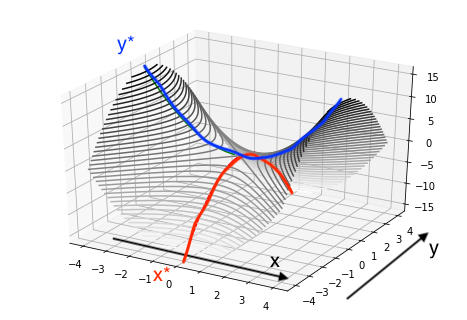

Overview: This lecture covers duality theory in convex optimization—the mathematical framework that connects every optimization problem to a "dual" problem, establishes optimality conditions, and provides the foundation for modern algorithms. We develop the Lagrangian function, prove weak and strong duality theorems, derive the KKT conditions, and explore applications across problem classes.
Prerequisites:Lecture 04 (convex optimization problem formulations), Lecture 03 (convex functions and subgradients)
Learning Objectives
After this lecture, you will be able to:
Construct the Lagrangian function and derive the dual function for any convex problem
Formulate the dual problem and understand the primal-dual relationship
Apply weak duality to obtain lower bounds on optimal values
State and prove strong duality under Slater's condition
Derive and verify the Karush-Kuhn-Tucker (KKT) optimality conditions
Use complementary slackness to analyze solution structure
Interpret dual variables as shadow prices and sensitivity coefficients
$\lambda \in \mathbb{R}^m$ are the dual variables (or Lagrange multipliers) for inequality constraints
$\nu \in \mathbb{R}^p$ are the dual variables for equality constraints
The domain is $\mathcal{D} = \text{dom}(f_0) \cap \bigcap_{i=1}^m \text{dom}(f_i) \cap \bigcap_{j=1}^p \text{dom}(h_j)$
Intuition: The Lagrangian augments the objective with weighted constraint violations. It transforms a constrained problem into an unconstrained one by penalizing constraint violations.
To compute $g(\lambda, \nu)$, we minimize the Lagrangian over $x$:
Form $L(x, \lambda, \nu)$
Compute $\inf_x L(x, \lambda, \nu)$ (often by setting $\nabla_x L = 0$ if differentiable)
The result is $g(\lambda, \nu)$
Example: For an LP minimize $c^T x$ s.t. $Ax = b$, $x \ge 0$:
$
L(x, \lambda, \nu) = c^\top x - \lambda^\top x + \nu^\top (Ax - b)
$
Taking $\inf_x$: if $c - \lambda + A^\top \nu \ne 0$, the infimum is $-\infty$. Otherwise, $g(\lambda, \nu) = -b^\top \nu$.

The Lagrangian exhibits a saddle point structure: minimized over $x$ (primal variables), maximized over $\lambda, \nu$ (dual variables). Source: Statistical Odds & Ends.
Interactive: Lagrangian Explainer
Purpose: Visualize how the Lagrangian function $L(x, \lambda, \nu)$ changes as dual variables $\lambda, \nu$ vary.
Adjust $\lambda$ (penalty on inequality constraints) and see Lagrangian surface update
Observe the infimum $g(\lambda, \nu)$ as a function of dual variables
Understand the saddle-point structure
2. The Dual Problem and Weak Duality
2.1 Lower Bound Property
Lemma: Dual Function Provides Lower Bound
Statement: For any $\lambda \succeq 0$ (componentwise) and any $\nu$, we have $g(\lambda, \nu) \le p^*$.
Proof: Let $\tilde{x}$ be any feasible point for the primal. Then $f_i(\tilde{x}) \le 0$ and $h_j(\tilde{x}) = 0$. Thus:
$
\begin{aligned}
L(\tilde{x}, \lambda, \nu) &= f_0(\tilde{x}) + \sum_{i=1}^m \lambda_i f_i(\tilde{x}) + \sum_{j=1}^p \nu_j h_j(\tilde{x}) \\
&\le f_0(\tilde{x}) \quad \text{(since $\lambda_i \ge 0$ and $f_i(\tilde{x}) \le 0$)}
\end{aligned}
$
Taking the infimum over all $x$ (including feasible $\tilde{x}$):
$
g(\lambda, \nu) = \inf_x L(x, \lambda, \nu) \le L(\tilde{x}, \lambda, \nu) \le f_0(\tilde{x})
$
This holds for all feasible $\tilde{x}$, so $g(\lambda, \nu) \le p^*$.
Proof: This is immediate from the lower bound property: for any dual feasible $(\lambda, \nu)$ with $\lambda \succeq 0$, we have $g(\lambda, \nu) \le p^*$. Taking the supremum over all such $(\lambda, \nu)$ gives $d^* \le p^*$.
2.4 The Duality Gap
The duality gap is $p^* - d^* \ge 0$. It measures how far the best dual bound is from the primal optimum.
The primal is easy: $x^* = 1, p^* = 1$. The dual function is $g(\lambda) = \inf_x (x^3 - \lambda(x-1))$.
For any $\lambda \ge 0$, as $x \to -\infty$, $x^3 - \lambda x \to -\infty$. Thus $g(\lambda) = -\infty$.
So $d^* = -\infty$. The duality gap is $\infty$. This happens because $f_0(x)=x^3$ is not convex on $\mathbb{R}$ (only on $\mathbb{R}_+$), and the domain isn't restricted.
💡 Geometric Interpretation of Duality
We can visualize the primal and dual problems using a hyperplane lifting argument in the space of (constraint value, objective value). Let $\mathcal{G} = \{(f_1(x), \dots, f_m(x), f_0(x)) \mid x \in \mathcal{D}\}$.
The primal problem is finding the point in $\mathcal{G}$ that intersects the vertical axis ($u=0$) at the lowest height.
The dual problem corresponds to finding a non-vertical supporting hyperplane to the set $\mathcal{A} = \mathcal{G} + \mathbb{R}^m_+ \times \mathbb{R}_+$ that passes below the set.
The intercept of this hyperplane with the vertical axis is the dual value $g(\lambda)$.
Strong Duality holds if the supporting hyperplane at the optimal point is non-vertical. This non-verticality is exactly what Slater's condition ensures!
For convex problems, we have a powerful condition:
Step 1: Define the set of achievable values.
Consider the set of values $(\text{constraint}, \text{objective})$ in $\mathbb{R}^{m+1}$:
$$ \mathcal{A} = \{(u, t) \mid \exists x, f_i(x) \le u_i, f_0(x) \le t\} $$
Since $f_i$ are convex, this set $\mathcal{A}$ is convex.
Step 2: Apply Separating Hyperplane Theorem.
Assume $d^* < p^*$ (duality gap). We want to find a contradiction.
The point $(0, p^*)$ is on the boundary of $\mathcal{A}$. But strictly speaking, $(0, d^*)$ is not in $\mathcal{A}$ if we assume the gap.
Let's separate $\mathcal{A}$ from the ray $(-\infty, d^*)$ in the objective dimension?
Standard proof: Consider the set $\mathcal{B} = \{(0, t) \mid t < p^*\}$. This is disjoint from $\mathcal{A}$.
By the Separating Hyperplane Theorem, there exists a hyperplane $(\lambda, \mu)$ separating $\mathcal{A}$ and $\mathcal{B}$.
$$ \lambda^\top u + \mu t \ge \alpha \quad \forall (u, t) \in \mathcal{A} $$
$$ \lambda^\top \cdot 0 + \mu t < \alpha \quad \forall t < p^* $$
Step 3: Analyze Dual Variables.
From the second inequality, $\mu \ge 0$. Also $\lambda \ge 0$ (otherwise we could send $u_i \to \infty$ in $\mathcal{A}$).
If $\mu > 0$, we can divide by $\mu$ to recover the standard Lagrangian multiplier $\tilde{\lambda} = \lambda/\mu$. Then $\inf L(x, \tilde{\lambda}) \ge \alpha/\mu \approx p^*$, implying $d^* \ge p^*$, so $d^* = p^*$.
Step 4: Use Slater's Point to ensure $\mu > 0$.
Suppose for contradiction that $\mu = 0$. Then the separation inequality becomes $\lambda^\top u \ge 0$ for all $u \in \mathcal{A}$.
Applying this to the Slater point $\tilde{x}$: let $\tilde{u}_i = f_i(\tilde{x})$ and $\tilde{t} = f_0(\tilde{x})$. Then $(\tilde{u}, \tilde{t}) \in \mathcal{A}$.
The inequality implies $\sum_{i=1}^m \lambda_i f_i(\tilde{x}) \ge 0$.
However, we know:
$\lambda \succeq 0$ and $\lambda \neq 0$ (since $(\lambda, \mu) \neq 0$ and $\mu=0$).
$f_i(\tilde{x}) < 0$ for all $i$ (strictly feasible).
Since $\lambda$ has at least one positive component $\lambda_k > 0$, and $f_k(\tilde{x}) < 0$, the term $\lambda_k f_k(\tilde{x})$ is strictly negative. All other terms are non-positive.
Thus, $\sum \lambda_i f_i(\tilde{x}) < 0$.
This contradicts $\sum \lambda_i f_i(\tilde{x}) \ge 0$. Therefore, the assumption $\mu=0$ must be false.
Conclusion: $\mu > 0$, which allows us to normalize the dual variables and prove $p^* = d^*$.
Why Interior Points Matter
Slater's condition requires a point in the relative interior of the feasible set. Geometrically, this ensures the feasible set has "volume" and doesn't collapse into a lower-dimensional degenerate shape where the supporting hyperplane could become vertical ($\mu=0$). A vertical hyperplane corresponds to an infinite dual value or a gap, signifying that the constraints are "infinitely hard" to satisfy in a differential sense.
3.2 Example: Strong Duality for LP
Consider the LP:
$
\text{minimize} \quad c^\top x \quad \text{s.t.} \quad Ax = b, \; x \ge 0
$
By LP duality theory (a special case of convex duality), strong duality holds if both are feasible. The geometric proof relies on polyhedral separation (Lecture 02).
4. Karush-Kuhn-Tucker (KKT) Optimality Conditions
4.1 Motivation
The KKT conditions provide necessary (and for convex problems, sufficient) conditions for a point to be optimal. They generalize the Lagrange multiplier conditions from calculus.
4.2 The KKT Conditions
Let $x^*$ be a candidate optimal point, and $(\lambda^*, \nu^*)$ be candidate dual variables. The KKT conditions are:
Complementary slackness: $\lambda_i^* f_i(x^*) = 0$ for all $i$
4.3 Complementary Slackness
The complementary slackness condition $\lambda_i^* f_i(x^*) = 0$ has a powerful interpretation:
If $\lambda_i^* > 0$, then $f_i(x^*) = 0$ (constraint $i$ is active)
If $f_i(x^*) < 0$ (constraint $i$ is inactive), then $\lambda_i^* = 0$
Intuition: Non-zero dual variables correspond to binding constraints. Slack constraints have zero dual variables.
Theorem: KKT Conditions for Convex Problems
Statement: For a convex problem with differentiable $f_0, f_i, h_j$, if strong duality holds and $x^*, (\lambda^*, \nu^*)$ are primal and dual optimal, then they satisfy the KKT conditions. Conversely, if the KKT conditions hold for some $(x^*, \lambda^*, \nu^*)$, then $x^*$ and $(\lambda^*, \nu^*)$ are primal and dual optimal.
Necessity (⇒): Suppose $x^*$ is primal optimal and strong duality holds. Then $x^*$ minimizes $L(x, \lambda^*, \nu^*)$, so $\nabla_x L(x^*, \lambda^*, \nu^*) = 0$ (stationarity). Primal and dual feasibility follow by definition. Complementary slackness follows from $g(\lambda^*, \nu^*) = f_0(x^*)$ at optimality.
Interpretation: The dual variable $\lambda_i^*$ measures the rate of change of the optimal value with respect to constraint $i$. This is the shadow price of constraint $i$.
Economic Interpretation: In resource allocation, $\lambda_i^*$ is the marginal value of relaxing constraint $i$ by one unit. A large $\lambda_i^*$ indicates that constraint $i$ is "expensive" (tightly binding).
5.2 Example: Water Filling
In communication systems, "water filling" allocates power across channels. The dual variable represents the "water level" (Lagrange multiplier), and active constraints correspond to filled channels.
Interactive: Shadow Prices & Sensitivity Analysis
Purpose: Perturb constraints and observe how optimal value $p^*(u)$ changes; verify $\lambda^* = -\nabla p^*(0)$.
Adjust RHS $u_i$ of constraint $i$ and see $p^*(u)$ update
Compare numerical derivative to dual variable $\lambda_i^*$
Understand economic interpretation (shadow price)
6. Duality for Specific Problem Classes
6.1 Linear Programming Duality
Primal:
$
\text{minimize} \quad c^\top x \quad \text{s.t.} \quad Ax = b, \; x \ge 0
$
Bertsekas, Convex Optimization Theory: Chapter 4 — Lagrange Multiplier Theory
Rockafellar, Convex Analysis: Section 28 — Saddle-Functions and Minimax Theory
Nocedal & Wright, Numerical Optimization: Chapter 12 — Theory of Constrained Optimization
10. Problem Set & Solutions
These problems consolidate the duality theory and provide practice in deriving duals, verifying KKT conditions, and applying sensitivity analysis.
P5.1 — Derive the Dual of a Simple QP
Consider the QP:
$
\text{minimize} \quad \frac{1}{2} x^\top x + c^\top x \quad \text{s.t.} \quad Ax = b
$
(a) Form the Lagrangian.
(b) Compute the dual function $g(\nu)$.
(c) Write the dual problem.
Recap & Key Concepts
Conjugate Relation: The dual function of a QP is explicitly derived from the convex conjugate of the quadratic form. Specifically, $\inf_x (\frac{1}{2}x^\top x + c^\top x) = -\frac{1}{2}\|c\|^2$. Adding constraints shifts the linear term.
Unconstrained Dual: Since the primal only has equality constraints, the dual variables $\nu$ are free (unconstrained). The dual problem is an unconstrained concave maximization of a quadratic form.
Solution
Part (a): Lagrangian.
$
L(x, \nu) = \frac{1}{2} x^\top x + c^\top x + \nu^\top (Ax - b)
$
Part (c): Dual problem.
$
\text{maximize} \quad -\frac{1}{2} \|c + A^\top \nu\|_2^2 - b^\top \nu
$
This is an unconstrained concave maximization (or convex minimization of the negative).
Verify that $(x_1^*, x_2^*) = (1/2, 1/2)$ with $\lambda^* = (1, 0, 0)$ satisfies the KKT conditions.
Recap & Key Concepts
Stationarity (Force Balance): The gradient of the objective $\nabla f_0$ is balanced by the forces from active constraints $\nabla f_i$. At the optimum, no net force exists to move the point while staying feasible.
Complementary Slackness Logic: Dual variables act as "switches". If a constraint is loose (inactive), the switch must be off ($\lambda_i=0$). If the switch is on ($\lambda_i > 0$), the constraint must be tight (active).
Solution
Step 1: Reformulate with standard form. Convert to minimization with $f_0(x) = x_1^2 + x_2^2$, constraints $-x_1 - x_2 \le -1$, $-x_1 \le 0$, $-x_2 \le 0$.
Standard LP Dual Construction: The dual of a minimization LP with $\ge$ constraints is a maximization LP with $\le$ constraints. The constraint matrix is transposed ($A \to A^\top$) and the cost/RHS vectors swap roles ($b \leftrightarrow c$).
Strong Duality in LP: For Linear Programs, strong duality holds if either problem is feasible. The only gap occurs in pathological cases where both are infeasible.
Solution
Part (a): Derive dual. Rewrite in standard form:
$
\text{min } c^\top x \text{ s.t. } -A x \le -b, \; x \ge 0
$
where $c = \begin{bmatrix} 3 \\ 2 \end{bmatrix}$, $A = \begin{bmatrix} 1 & 1 \\ 2 & 1 \end{bmatrix}$, $b = \begin{bmatrix} 4 \\ 5 \end{bmatrix}$.
The dual is:
$
\text{maximize} \quad 4\lambda_1 + 5\lambda_2
$
$
\text{subject to} \quad \lambda_1 + 2\lambda_2 \le 3, \; \lambda_1 + \lambda_2 \le 2, \; \lambda_1, \lambda_2 \ge 0
$
Part (b): Graphical solution.
Primal: Plot feasible region $x_1 + x_2 \ge 4$, $2x_1 + x_2 \ge 5$, $x_1, x_2 \ge 0$. Minimize $3x_1 + 2x_2$ at vertex $(1, 3)$ with $p^* = 9$.
Dual: Plot feasible region $\lambda_1 + 2\lambda_2 \le 3$, $\lambda_1 + \lambda_2 \le 2$, $\lambda_1, \lambda_2 \ge 0$. Maximize $4\lambda_1 + 5\lambda_2$ at vertex $(1, 1)$ with $d^* = 9$.
Part (c): Verify strong duality. Since $p^* = d^* = 9$, strong duality holds.
Slater's Necessity: Slater's condition (strict feasibility) is a sufficient condition for strong duality. When it fails (e.g., the feasible set has no interior), strong duality may break, as seen in this example where $p^* > d^*$.
Constraint Singularity: The constraint $(x-1)^2 \le 0$ describes a single point but has a vanishing gradient at that point. This singularity prevents the dual variable from "pricing" the constraint correctly, leading to a duality gap.
Solution
Part (a): Slater's condition. The constraint $(x - 1)^2 \le 0$ is satisfied only when $x = 1$ (since squares are nonnegative). There is no point with $(x - 1)^2 < 0$ (strict inequality). Thus, Slater's condition is NOT satisfied.
Part (b): Strong duality. Without Slater's condition, strong duality may not hold. Let's check.
Part (c): Compute $p^*$ and $d^*$.
Primal: The only feasible point is $x = 1$, so $p^* = 1^2 = 1$.
Dual: The Lagrangian is $L(x, \lambda) = x^2 + \lambda (x - 1)^2$. Taking $\inf_x$:
$
\nabla_x L = 2x + 2\lambda (x - 1) = 0 \implies x = \frac{\lambda}{\lambda + 1}
$
Substituting:
$
g(\lambda) = \left(\frac{\lambda}{\lambda + 1}\right)^2 + \lambda \left(\frac{\lambda}{\lambda + 1} - 1\right)^2 = -\frac{\lambda^2}{(\lambda + 1)^2}
$
As $\lambda \to \infty$, $g(\lambda) \to -1$. But $g(\lambda) \le 0$ for all $\lambda \ge 0$, so $d^* = 0$.
Thus $p^* = 1 > 0 = d^*$, and there is a duality gap. Strong duality does NOT hold.
Shadow Prices: The optimal dual variable $\lambda_i^*$ represents the "shadow price" of the $i$-th constraint: it is the rate of improvement in the optimal objective value per unit of relaxation of the constraint.
Sensitivity Formula: The relation $\nabla p^*(0) = -\lambda^*$ quantifies sensitivity. If $\lambda^*$ is large, the constraint is a major bottleneck; relaxing it yields significant gains.
Solution
Part (a): Shadow price interpretation. $\lambda^* = 1$ means that if we relax the constraint $x_1 + 2x_2 \ge 3$ to $x_1 + 2x_2 \ge 3 - u$ (i.e., perturb RHS by $+u$), the optimal value decreases at rate $\lambda^* = 1$. In other words, each unit decrease in the RHS requirement saves 1 unit of cost.
Part (b): Perturbed problem.
$
\text{minimize} \quad x_1 + x_2 \quad \text{s.t.} \quad x_1 + 2x_2 \ge 3 + u, \; x_1, x_2 \ge 0
$
The new optimal solution (for small $u$) is $x^*(u) = (3 + u, 0)$ (moving along the $x_1$ axis), so:
$
p^*(u) = (3 + u) + 0 = 3 + u
$
Part (c): Verify sensitivity.
$
\frac{dp^*}{du}\bigg|_{u=0} = 1
$
And indeed, $-\lambda^* = -1 \cdot (-1) = 1$ (note: sign convention depends on how perturbation is defined). The magnitude matches the shadow price.
P5.6 — SVM Dual Formulation
For the hard-margin SVM:
$
\text{minimize} \quad \frac{1}{2} \|w\|_2^2 \quad \text{s.t.} \quad y_i (w^\top x_i + b) \ge 1, \; i = 1, \dots, n
$
(a) Write the Lagrangian.
(b) Derive the dual problem.
Recap & Key Concepts
Dual Representation: The KKT stationarity condition $\nabla_w L = 0$ implies $w = \sum \alpha_i y_i x_i$. This shows the optimal weights lie in the span of the data points.
The Kernel Trick: Since the dual objective involves data only through dot products $\langle x_i, x_j \rangle$, we can replace the Euclidean inner product with any valid kernel function $K(x_i, x_j)$, enabling non-linear classification in infinite-dimensional spaces.
Solution
Part (a): Lagrangian.
$
L(w, b, \alpha) = \frac{1}{2} \|w\|_2^2 + \sum_{i=1}^n \alpha_i (1 - y_i (w^\top x_i + b))
$
where $\alpha_i \ge 0$ are dual variables.
Dual problem:
$
\text{maximize} \quad \sum_i \alpha_i - \frac{1}{2} \sum_{i,j} \alpha_i \alpha_j y_i y_j x_i^\top x_j
$
$
\text{subject to} \quad \alpha_i \ge 0, \; \sum_i \alpha_i y_i = 0
$
This is a QP in $\alpha$, enabling the kernel trick: replace $x_i^\top x_j$ with $K(x_i, x_j)$.
P5.7 — Complementary Slackness in Portfolio Optimization
Consider the portfolio problem (Lecture 04):
$
\text{minimize} \quad x^\top \Sigma x \quad \text{s.t.} \quad \mu^\top x \ge r_{\text{target}}, \; \mathbf{1}^\top x = 1, \; x \ge 0
$
Suppose at optimality, only asset 3 has $x_3^* = 0$ (all others positive), and the return constraint is active.
(a) What can you conclude about the dual variable $\lambda_3$ for constraint $x_3 \ge 0$?
(b) What does complementary slackness say about the return constraint?
Recap & Key Concepts
Reduced Cost Interpretation: The dual variable for the non-negativity constraint ($x_i \ge 0$) is the "reduced cost". If $x_i^*=0$, then $\lambda_i > 0$ implies that the asset is "too expensive" relative to its risk/return contribution—investing in it would worsen the objective.
Complementary Slackness in Finance: If an asset is not held ($x_i^*=0$), the non-negativity constraint is active. If an asset is held ($x_i^* > 0$), the constraint is inactive, so its shadow price $\lambda_i^*$ must be zero (marginal benefit equals marginal cost).
Solution
Part (a): Dual variable $\lambda_3$. The constraint is $x_3 \ge 0$, or equivalently $-x_3 \le 0$ in standard form. The complementary slackness condition is $\lambda_3 x_3^* = 0$.
Since $x_3^* = 0$, this condition is trivially satisfied for any $\lambda_3 \ge 0$.
However, we can infer more from the stationarity condition. The KKT stationarity condition is:
$$ \nabla f_0(x^*) + \sum \lambda_i \nabla f_i(x^*) + \sum \nu_j \nabla h_j(x^*) = 0 $$
For this problem:
$$ 2(\Sigma x^*)_3 - \nu_{\text{ret}} \mu_3 - \nu_{\text{budget}} \cdot 1 - \lambda_3 = 0 $$
Solving for $\lambda_3$:
$$ \lambda_3 = 2(\Sigma x^*)_3 - \nu_{\text{ret}} \mu_3 - \nu_{\text{budget}} $$
Since $\lambda_3 \ge 0$, this tells us that the marginal benefit of investing in asset 3 (based on return and covariance) is less than or equal to the "shadow price" cost. If $\lambda_3 > 0$, it strictly indicates that the non-negativity constraint is binding and preventing the objective from improving further (i.e., we would want to short-sell asset 3 if allowed).
Part (b): Return constraint. The return constraint $\mu^\top x \ge r_{\text{target}}$ (or $-\mu^\top x \le -r_{\text{target}}$) is active, meaning $\mu^\top x^* = r_{\text{target}}$. The complementary slackness condition is $\nu_{\text{ret}} (\mu^\top x^* - r_{\text{target}}) = 0$, which is satisfied.
Typically, if a constraint is active, its associated dual variable $\nu_{\text{ret}}$ is positive ($\nu_{\text{ret}} > 0$), reflecting the "cost" or sensitivity of the optimal value to the return requirement.
Geometric Programming Connection: The dual of minimizing entropy (or maximizing likelihood) naturally leads to Log-Sum-Exp functions. This connects information theory primal problems to geometric programming duals.
Maximum Entropy Principle: The primal seeks the distribution closest to uniform (max entropy) satisfying moment constraints. The dual finds the parameters of the corresponding exponential family distribution.
Solution
Step 1: Conjugate of negative entropy.
The objective function is $f_0(x) = \sum x_i \log x_i$. This is separable, so we can find the conjugate of the scalar function $\phi(u) = u \log u$.
$\phi^*(y) = \sup_{u > 0} (uy - u \log u)$.
Setting derivative to zero: $y - (\log u + 1) = 0 \implies \log u = y - 1 \implies u = e^{y-1}$.
Substituting back: $\phi^*(y) = e^{y-1} y - e^{y-1}(y-1) = e^{y-1}(y - y + 1) = e^{y-1}$.
Thus, $f_0^*(y) = \sum_{i=1}^n e^{y_i - 1}$.
Step 2: Dual Function.
The problem has equality constraints $Ax = b$ and $\mathbf{1}^\top x = 1$. Let $\nu \in \mathbb{R}^m$ be dual variables for $Ax=b$ and $\mu \in \mathbb{R}$ for $\mathbf{1}^\top x = 1$.
The dual function is:
$$ g(\nu, \mu) = \inf_x \left( f_0(x) + \nu^\top(Ax - b) + \mu(\mathbf{1}^\top x - 1) \right) $$
$$ g(\nu, \mu) = -b^\top \nu - \mu + \inf_x \left( f_0(x) + (A^\top \nu + \mu \mathbf{1})^\top x \right) $$
$$ g(\nu, \mu) = -b^\top \nu - \mu - \sup_x \left( -(A^\top \nu + \mu \mathbf{1})^\top x - f_0(x) \right) $$
$$ g(\nu, \mu) = -b^\top \nu - \mu - f_0^*(-(A^\top \nu + \mu \mathbf{1})) $$
Step 4: Dual Problem.
maximize $g(\nu, \mu)$.
We can analytically maximize over $\mu$. Let $S(\nu) = \sum_{i=1}^n e^{-(A^\top \nu)_i}$.
$$ \frac{\partial g}{\partial \mu} = -1 - e^{-\mu-1} S(\nu) \cdot (-1) = -1 + e^{-\mu-1} S(\nu) = 0 $$
$$ e^{-\mu-1} = \frac{1}{S(\nu)} \implies -\mu-1 = -\log S(\nu) \implies \mu = \log S(\nu) - 1 $$
Substitute $\mu$ back into $g$:
$$ g(\nu) = -b^\top \nu - (\log S(\nu) - 1) - \frac{1}{S(\nu)} S(\nu) $$
$$ g(\nu) = -b^\top \nu - \log S(\nu) + 1 - 1 = -b^\top \nu - \log\left(\sum_{i=1}^n e^{-(A^\top \nu)_i}\right) $$
The dual problem is:
$$ \text{maximize} \quad -b^\top \nu - \log\left(\sum_{i=1}^n e^{-a_i^\top \nu}\right) $$
This is an unconstrained geometric programming dual (Log-Sum-Exp).
P5.9 — Derivation of SDP Duality
Semidefinite programming (SDP) is a powerful generalization of linear programming. In this problem, you will derive the dual of a standard form SDP.
Consider the primal SDP:
$$
\begin{aligned}
\text{minimize} \quad & \text{tr}(CX) \\
\text{subject to} \quad & \text{tr}(A_i X) = b_i, \quad i = 1, \dots, m \\
& X \succeq 0
\end{aligned}
$$
where $C, A_1, \dots, A_m \in \mathbb{S}^n$ are symmetric matrices, and $X \in \mathbb{S}^n$ is the variable.
(a) Form the Lagrangian $L(X, y, S)$ using the trace inner product.
(b) Derive the dual function $g(y, S) = \inf_X L(X, y, S)$.
(c) State the full dual problem.
Recap & Key Concepts
Matrix Lagrange Multipliers: For a matrix inequality constraint $X \succeq 0$, the Lagrange multiplier is a matrix $S$ in the dual cone (which is also the PSD cone). The inner product is the trace $\mathrm{tr}(SX)$.
SDP Duality Structure: The standard primal SDP optimizes a linear function of a matrix variable subject to affine constraints. Its dual optimizes a vector variable subject to a Linear Matrix Inequality (LMI). This asymmetry is characteristic of conic duality.
Solution
Part (a): The Lagrangian.
We associate dual variables $y \in \mathbb{R}^m$ with the equality constraints $\text{tr}(A_i X) = b_i$.
We associate a dual matrix variable $S \in \mathbb{S}^n$ with the inequality constraint $X \succeq 0$.
Note that $X \succeq 0$ is equivalent to $-X \preceq 0$. The generalized Lagrangian term for inequality $G(x) \preceq 0$ with dual variable $\Lambda \succeq 0$ is $\text{tr}(\Lambda^\top G(x))$.
Here, we use the convention of adding weighted constraints. Since we require $X \succeq 0$, we can view this as a constraint $-X \in \mathbb{S}^n_-$. The term in the Lagrangian is typically subtracted: $-\text{tr}(SX)$ with $S \succeq 0$.
Alternatively, write the constraints as $b_i - \text{tr}(A_i X) = 0$ and $X \succeq 0$.
$$ L(X, y, S) = \text{tr}(CX) + \sum_{i=1}^m y_i (b_i - \text{tr}(A_i X)) - \text{tr}(SX) $$
where $S \succeq 0$.
Rearranging terms to group by $X$:
$$ L(X, y, S) = \text{tr}(CX) - \sum_{i=1}^m y_i \text{tr}(A_i X) - \text{tr}(SX) + \sum_{i=1}^m y_i b_i $$
Using linearity of trace:
$$ L(X, y, S) = \text{tr}\left( \left( C - \sum_{i=1}^m y_i A_i - S \right) X \right) + b^\top y $$
Part (b): The Dual Function.
The dual function is $g(y, S) = \inf_X L(X, y, S)$.
The Lagrangian is an affine function of $X$.
$$ L(X, y, S) = \text{tr}(M X) + b^\top y \quad \text{where } M = C - \sum_{i=1}^m y_i A_i - S $$
We need to minimize $\text{tr}(MX)$ over $X \in \mathbb{S}^n$.
If $M \neq 0$, we can choose $X = -k M$. Then $\text{tr}(MX) = -k \text{tr}(M^2) = -k \|M\|_F^2$. As $k \to \infty$, this goes to $-\infty$.
Thus, the infimum is finite only if $M = 0$.
$$ g(y, S) = \begin{cases} b^\top y & \text{if } C - \sum_{i=1}^m y_i A_i - S = 0 \\ -\infty & \text{otherwise} \end{cases} $$
Part (c): The Dual Problem.
We maximize the dual function subject to dual feasibility ($S \succeq 0$).
$$
\begin{aligned}
\text{maximize} \quad & b^\top y \\
\text{subject to} \quad & C - \sum_{i=1}^m y_i A_i - S = 0 \\
& S \succeq 0
\end{aligned}
$$
We can eliminate the slack matrix $S$ by writing the equality as an inequality:
$$ S = C - \sum_{i=1}^m y_i A_i $$
The constraint $S \succeq 0$ becomes:
$$ C - \sum_{i=1}^m y_i A_i \succeq 0 \iff \sum_{i=1}^m y_i A_i \preceq C $$
So the standard dual SDP is:
$$
\begin{aligned}
\text{maximize} \quad & b^\top y \\
\text{subject to} \quad & \sum_{i=1}^m y_i A_i \preceq C
\end{aligned}
$$